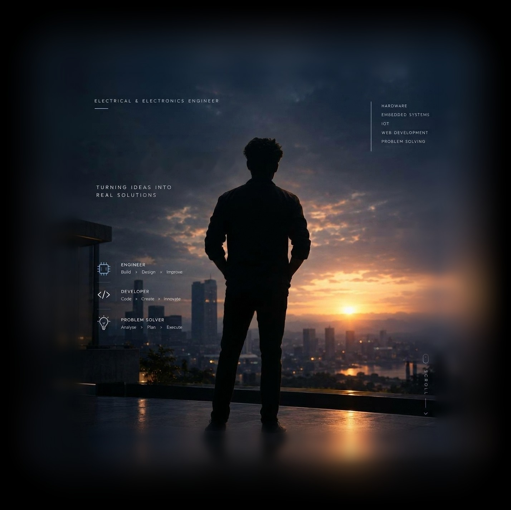
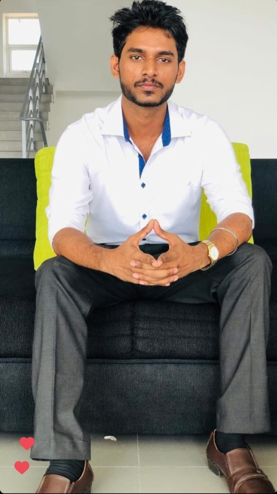
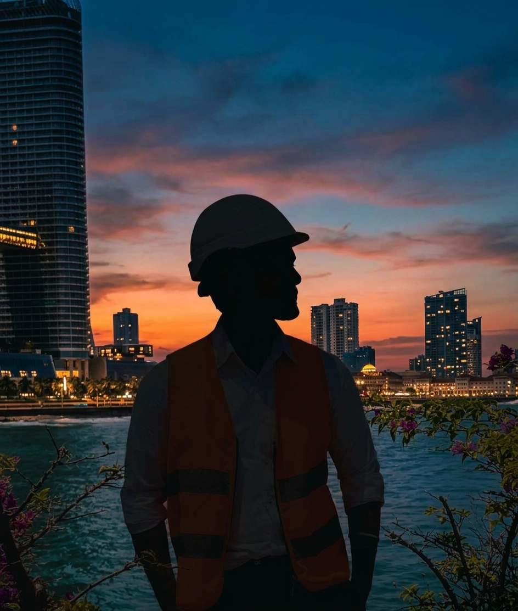
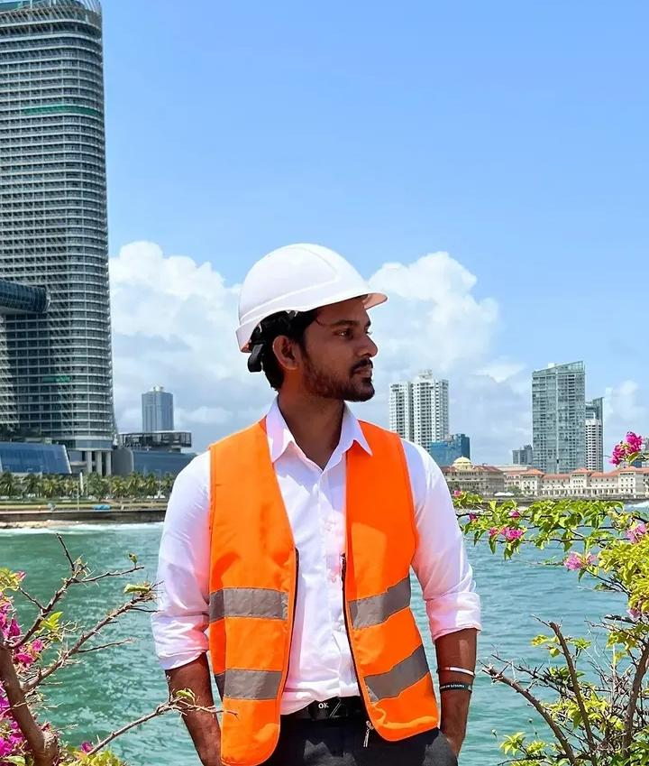

Unlock the better
version of you

I'm an Electrical and Electronic Engineering graduate (BSc Hons, SLIIT, 2026) who likes building things that actually work. Across two industrial placements I've soldered and debugged IoT hardware in a telecom R&D lab, and walked through power stations, grid substations and distribution networks at the Ceylon Electricity Board.
My final-year project was a non-invasive heart health monitoring system, combining sensor hardware with embedded data processing. I'm looking for an entry-level Electrical / Electronic Engineering role where I can keep learning and contribute from day one.


Sri Lanka Telecom's Digital Lab is its R&D and innovation arm. I trained in a live commercial environment, working on IoT and embedded hardware from circuit assembly and soldering through to testing and debugging.
For the first two weeks I worked only on the Copper Guard project and finished a full series of devices ready for delivery. After that I chose several mini projects over one five-month project, so I could gain broader experience within the internship period.
An IoT system that fights copper wire theft on street lighting, solar farms and telecom lines. It monitors up to eight 48V DC copper lines. Optocouplers isolate the microcontroller from the high voltage while checking line integrity. If a line is cut or tampered with, an ESP32 and SIM800L GSM module send SMS alerts to pre-set contacts.
Remote control of an AC light using an ESP-01 and relay module. I first built it with the Blynk app, then removed the need for external Wi-Fi by running an ESP32 in Access Point mode. It creates its own hotspot and hosts a web page with ON/OFF switches, and mDNS lets users type a name instead of an IP address.
Built around an ESP32 Supermini with two servo-driven wheels, Li-Po power and an ESP32-CAM. I swapped the ADXL345 for an MPU6050 to get a gyroscope. Control moved from Blynk to a custom React Native app with direction buttons and live video, plus offline voice commands through an AI Thinker VC02. I also identified proper PID tuning as the key to stable balance.
A laser-based transmitter and receiver. The original design used a Raspberry Pi Zero plus an extra ESP32 just for analog-to-digital conversion. I helped simplify it to a single Raspberry Pi Pico with a built-in ADC: fewer parts and a more efficient system.
Took over the robot's expressive face: wired two GC9A01 round LCD panels as eyes on an ESP32, communicating over SPI, and wrote code to display and animate different eye patterns to make the robot more engaging for children.
Tested a batch of finished devices and found five defective. I repaired two by adding external connections to ports missing connectors, replaced faulty SIM card holders on two more, and fitted a new antenna on the last. Data was viewed on a ThingsBoard dashboard.
Found and corrected small errors in the Copper Guard circuit diagram and swapped out defective components.
Diagnosed a relay module with an internal short in the light project and replaced it.
Realised the ADXL345 had no gyroscope and replaced it with the MPU6050 for stable orientation.
Cut the laser system from two boards to one, showing the value of simple hardware choices.
Twelve weeks of site visits across Sri Lanka's power system, from generation to transmission to the consumer, applying classroom knowledge of power system analysis, load flow and safety procedures to real utility work.
Thermal plant running on natural gas and fuel oil, with 132 kV and 33 kV switchyards. Learned gas turbine components, steam turbine basics and maintenance.
Diesel-engine power generation, covering the diesel engine and turbocharger.
Two weeks in the transmission section, including the Sapugaskanda grid station, studying switchyard instruments, towers and cable systems.
Electricity distribution to end consumers: XLPE cables, tower identification and cable pulling on site.
Designed a non-invasive system that tracks key heart health indicators, combining sensor hardware with embedded data processing.
Wi-Fi automation controlling an AC bulb remotely through a mobile application.
Arduino car combining sensor input with real-time motor control logic.
Simulated load flows, symmetric and asymmetric faults, and transmission limits in PowerWorld to optimise dispatch safety.
Engineered and simulated a multi-stage transistor amplifier, including a custom PCB schematic.
Designed, analysed and soldered a physical circuit with validated frequency response.
Designed and simulated a circuit for smooth supply filtering with a minimal hardware footprint.
Simulated a high-speed comparator with custom threshold and reference voltages.
Designed a combinational logic system in schematic simulation software.
Built and tested a physical supply with transformer, bridge rectifier and voltage stabilisation.
Java OOP desktop application with clean design patterns and a relational database.
C++ system using inheritance, polymorphism and memory management.
Sri Lanka Institute of Information Technology (SLIIT). CGPA 3.24 / 4.00. Final-year research project successfully defended.
G.C.E. A/L (2021): 2C, 1S. G.C.E. O/L (2017): 7A, 1B, 1C. Junior Prefect 2012–2017.
IEEE Student Branch, SLIIT (2023–2026). Rotaract Club of SLIIT (2025–2026).
Leo Club committee / in charge (2014–2020), St. John Ambulance Cadet, Interact Club, Science, Maths and Tamil Unions.
British Council English courses (KET passed). Explorer Coding Program, American Center. Languages: Tamil (native), English (full professional).
Shotokan Karate-Do (10th and 9th Kyu). Inter House Sports Meet 2008 race runner-up.
Open to entry-level Electrical / Electronic Engineering roles.
logendrapiratheep@gmail.com +94 76 962 2822